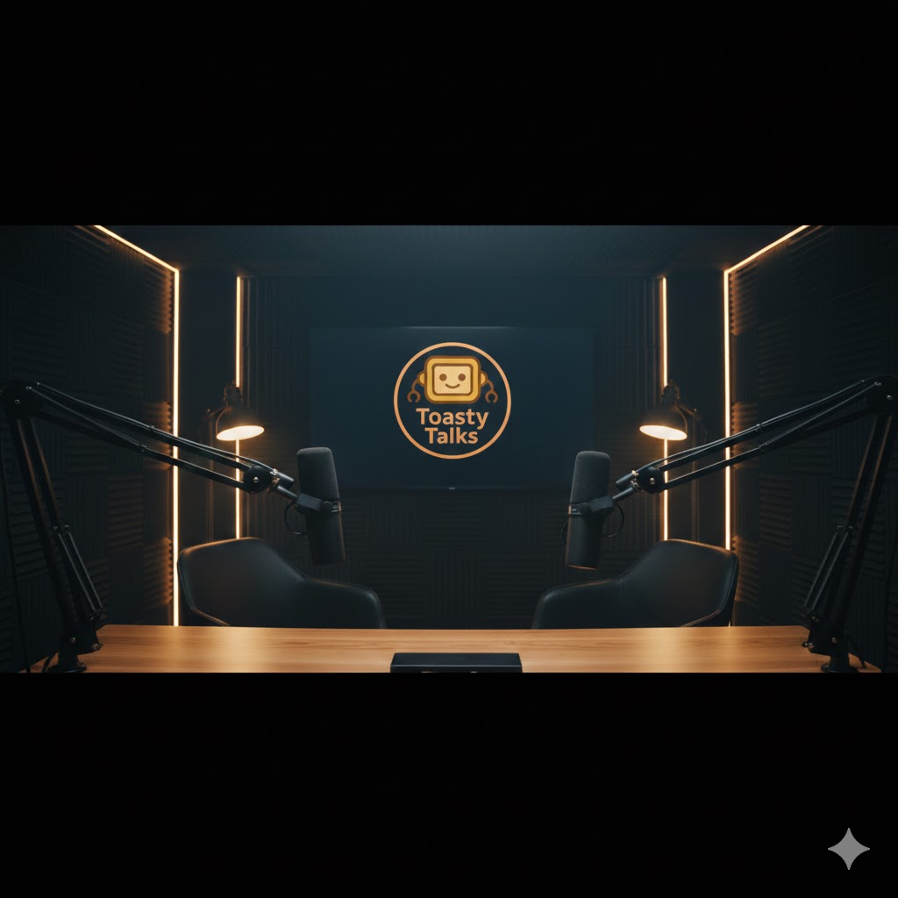

Discover
Find people worth talking to
Describe the person you need. Toasty can surface candidates for podcasts, panels, interviews, advisory conversations, workshops and research.

AI-powered media production
Toasty brings guest discovery, research, digital doubles, live recording, AI production and repurposing into one production system.



One production workspace
Start with an idea, an existing piece of content, or a person you want to interview. Toasty helps move the production all the way through.


Expertise inside the workflow
Discover
Describe the person you need. Toasty can surface candidates for podcasts, panels, interviews, advisory conversations, workshops and research.
Screen
Permissioned professional evidence helps Toasty test fit, experience, recency and subject depth before interrupting the human.
Prepare
Once the right person is selected, their evidence feeds the production brief, background research and interview questions.
Human expertise, made searchable
The use case changes. The problem is the same: finding the right human is slow. Toasty makes discovery and first-pass screening part of production instead of another disconnected job.
The Toasty workflow
Start with an idea or source material. Find guests when you need them, build the brief, and prepare the conversation.
Run the live room, capture the conversation, control scenes and sound, or build from uploaded media inside AI Production.
Turn the source production into long-form video, audio, clips, captions, social assets and publishing-ready media.
Toasty Media
Interviews
Interview-led media and conversations produced through the Toasty workflow.

Books
Books and authored work live under the Toasty Media umbrella without becoming separate product identities.
Explore bonus materialsCreator
Profile, speaking, writing and current work.
View Ricardo